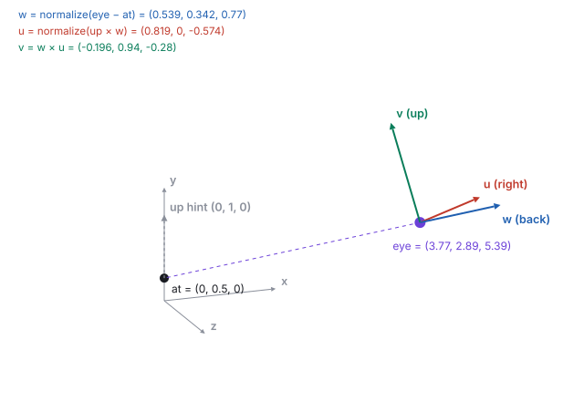
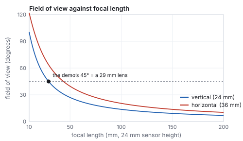
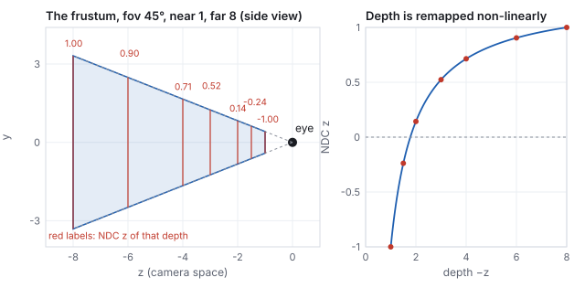
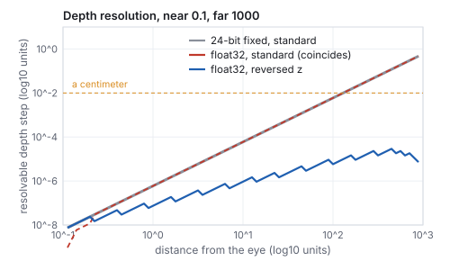
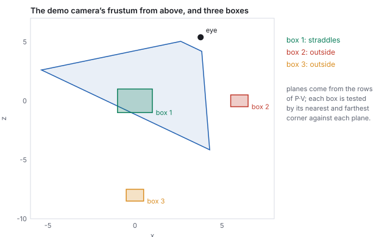
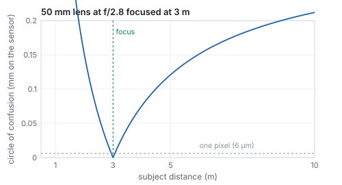

This chapter links to the course’s interactive demos and uses MathJax for its
formulas. Read it through the course website (or download the file and open it in a
browser); a Canvas inline preview will reach neither the demos nor the math.
All chapters.
Viewing: the Camera, the View Matrix, and Projection
CSS 551 · Advanced 3D Computer Graphics · course text
Course text · a camera is a frame plus a lens, and both are matrices you can build: the look-at basis, the view matrix, the pinhole and the perspective matrix entry by entry, what a depth buffer can resolve, the frustum’s planes and what they cull, off-axis frusta, orthographic projection, the thin lens, and moving the camera. Assigned by your offering’s course site; pairs with the lecture on 3D viewing.
Placing objects in a world produces nothing visible until someone says where the viewer stands and which way they look. Two matrices turn a placed world into a flat image: the view matrix, which re-expresses the world in the camera’s own coordinate frame, and the projection matrix, which flattens depth by dividing by it. This chapter builds both from the vectors and affine maps of the earlier chapters: three cross products for the camera’s axes, the rigid inverse for the view matrix, similar triangles for the perspective divide, and a \(4\times4\) whose last row is the one non-affine row in the pipeline. It then goes where a renderer has to go next: what a field of view means in a photographer’s millimeters, what a 24-bit or a floating-point depth buffer can and cannot tell apart and why reversing the depth range helps by a factor of a thousand, how the six planes of the frustum fall out of the projection matrix and cull a box in six dot products, how an asymmetric frustum serves a stereo display, and what a real lens adds that the pinhole omits. Every matrix is the course library’s own, on the demos’ own cameras, and one vertex is followed through the whole chain to the pixel and the depth value it lands on.
A camera is pinned down by three inputs, the ones a photographer sets: a position
\(\mathbf{eye}\), a target \(\mathbf{at}\), and a rough up direction \(\mathbf{up}\)
(usually world \(+y\)). From them, three cross products build an orthonormal frame
fixed to the camera:
Definition (the look-at basis)
\[
\mathbf{w} = \widehat{\mathbf{eye} - \mathbf{at}}, \qquad
\mathbf{u} = \widehat{\mathbf{up}\times\mathbf{w}}, \qquad
\mathbf{v} = \mathbf{w}\times\mathbf{u} .
\]
\(\mathbf{w}\) points from the target back toward the eye; the camera looks down
\(-\mathbf{w}\). \(\mathbf{u}\) is the camera’s right and \(\mathbf{v}\) its true up,
straightened from the hint. The frame is right-handed, and \(\mathbf{up}\) only has to be
roughly up: it must not be parallel to the view direction, the one degenerate case
(looking straight down world \(y\) with \(\mathbf{up} = +y\)), where the cross product
vanishes and the library throws.
This is the frame-from-two-vectors construction of the vectors chapter,
with a purpose: it is the camera’s orientation. Why \(\mathbf{w}\) points
backward: the projection of Section 3 assumes visible points have negative \(z\) in
camera space, so the camera’s backward axis is its \(+z\), and using
\(\mathbf{at} - \mathbf{eye}\) instead would produce a left-handed frame and flip the
projection’s signs.

The demo’s default camera: azimuth \(35^\circ\), elevation \(20^\circ\), distance 7 around \(\mathbf{at} = (0, 0.5, 0)\), so \(\mathbf{eye} = (3.773, 2.894, 5.388)\). The three axes at the eye are unit and mutually perpendicular (every pairwise dot product computes to 0).
\(\mathbf{u}\) has no \(y\) component because \(\mathbf{up}\) was exactly \(+y\) and the cross
product with it lands in the \(x\)–\(z\) plane; \(\mathbf{v}\) then fills in the true up,
tilted \(20^\circ\) forward because the camera looks down at the target.
2 · The view matrix
Objects live in world space; the camera renders whatever lands in its own frame. The
view matrix \(V\) is the change of coordinates \(\mathbf{p}_{\text{view}} = V\,\mathbf{p}_{\text{world}}\):
the same point, described in the camera’s axes, with the eye at the origin.
The view matrix
To express a world vector in the camera’s axes, dot it with each axis; putting the
axes in the rows of a matrix does exactly that. To put the eye at the origin,
subtract it first. So \(\mathbf{p}_{\text{view}} = R(\mathbf{p} - \mathbf{eye}) = R\mathbf{p} - R\,\mathbf{eye}\) with
\(R\) the basis as rows, and
\[
V = \begin{pmatrix} u_x & u_y & u_z & -\mathbf{u}\cdot\mathbf{eye} \\ v_x & v_y & v_z & -\mathbf{v}\cdot\mathbf{eye} \\ w_x & w_y & w_z & -\mathbf{w}\cdot\mathbf{eye} \\ 0 & 0 & 0 & 1 \end{pmatrix}.
\]
This is the rigid inverse of the affine chapter,
\([R^{\mathsf T}, -R^{\mathsf T}\mathbf{t}]\), applied to the camera’s own placement (columns
\(\mathbf{u}, \mathbf{v}, \mathbf{w}\) and translation \(\mathbf{eye}\)): placing the camera
in the world and expressing the world in the camera are inverse operations. When the
camera is a node of a scene graph, \(V\) is simply the
inverse of its world matrix.
Worked example (\(V\) at the demo’s defaults)
Rows are the basis; the translation column is each axis dotted with the eye, negated:
\[
-\mathbf{u}\cdot\mathbf{eye} = -(0.819\cdot3.773 + 0 - 0.574\cdot5.388) = 0.00, \quad
-\mathbf{v}\cdot\mathbf{eye} = -(-0.196\cdot3.773 + 0.940\cdot2.894 - 0.280\cdot5.388) = -0.47, \quad
-\mathbf{w}\cdot\mathbf{eye} = -(0.539\cdot3.773 + 0.342\cdot2.894 + 0.770\cdot5.388) = -7.17 .
\]
\[
V = \begin{pmatrix} 0.82 & 0.00 & -0.57 & 0.00 \\ -0.20 & 0.94 & -0.28 & -0.47 \\ 0.54 & 0.34 & 0.77 & -7.17 \\ 0 & 0 & 0 & 1 \end{pmatrix},
\]
the demo panel to two decimals. The \(-7.17\) is the eye’s signed distance out the
back axis, the dominant translation; \(-\mathbf{u}\cdot\mathbf{eye} = 0\) because the eye,
the target and the up hint lie in one vertical plane and \(\mathbf{u}\) is perpendicular
to it.
The rotation rows are doing real work. Replace them by the identity and keep only the
translation, and the “camera” sits in the right place but always faces world
\(-z\); aiming it at a target changes nothing. Sung’s course projects ship exactly this
broken mode, ViewMatrixWrong, as the control that proves the cross products
matter.
See it liveThe view matrix:
orbit the eye on a sphere around the target and watch the rows of \(V\) turn; drag the
distance and mostly the bottom-right entry changes.
3 · Perspective: divide by depth
The oldest camera is a pinhole: light passes through one point onto a plane behind it,
and objects farther away project smaller, which is why railroad tracks converge. Put the
eye at the camera-space origin looking down \(-z\), with an image plane at distance
\(d\) in front. A point at \((x, y, z)\), \(z < 0\), projects by similar triangles:
One derivation explains all of perspective. The point at depth 4 projects to \(y' = 1\cdot2/4 = 0.5\); double the depth and the projected size halves.
A matrix cannot divide; it can only multiply and add. The trick that makes perspective a
matrix operation is the affine chapter’s
boundary: write the depth into the fourth coordinate \(w'\), and let the pipeline divide
every component by \(w'\) afterward. That divide, applied uniformly to every vertex, is the
similar-triangles divide above. Run backward, the same fan of lines through the pinhole is
the camera ray of the ray-tracing chapter and the
unprojection of the interaction chapter.
4 · Field of view, focal length, aspect
The pinhole’s one free parameter is how wide a cone of the world reaches the image.
Graphics states it as an angle, the vertical field of view; photography states it
as a focal length in millimeters relative to a sensor of known size, and the two are one
formula apart.
Definition (field of view and focal length)
For a sensor of height \(h\) at distance \(f\) behind the pinhole,
\[
\text{fov}_v = 2\arctan\frac{h}{2f}, \qquad f = \frac{h}{2\tan(\text{fov}_v/2)} .
\]
The horizontal field of view follows from the aspect ratio \(a = \text{width}/\text{height}\):
\(\tan(\text{fov}_h/2) = a\tan(\text{fov}_v/2)\), and the diagonal one uses \(\sqrt{1 + a^2}\).

Field of view against focal length for a full-frame (\(36\times24\) mm) sensor. The relation is a tangent, so halving the focal length more than doubles the angle at the wide end and barely changes it at the long end.
Worked example (the demo’s lens)
The demo’s \(45^\circ\) vertical field of view on a 24 mm sensor is a focal length of
\(24/(2\tan 22.5^\circ) = 29\) mm, a moderate wide-angle. A 50 mm lens, the classic
“normal” lens, gives \(2\arctan(24/100) = 27.0^\circ\) vertically and
\(39.6^\circ\) horizontally; a 14 mm gives \(81^\circ\) and \(104^\circ\); a 200 mm gives
\(6.9^\circ\) and \(10.3^\circ\). At the demo’s aspect \(1.78\), the \(45^\circ\) vertical
field is \(72.8^\circ\) horizontally and \(80.4^\circ\) on the diagonal. Games that quote a
horizontal field of view of \(90^\circ\) are running \(58.7^\circ\) vertically at that aspect,
which is why the same setting looks different on a \(4{:}3\) screen.
The aspect ratio also fixes the shape of the image plane: the projection scales \(x\) by
\(1/a\) relative to \(y\) so that a wide framebuffer shows more world on the sides rather
than a stretched one. Get \(a\) from the framebuffer’s actual pixel dimensions every
time the window resizes; a projection built for \(1.78\) and drawn into a square viewport
stretches everything by \(1.78\) horizontally.
5 · The projection matrix, entry by entry
Definition (perspective projection)
With \(f = 1/\tan(\text{fov}/2)\) for a vertical field of view, an aspect ratio
\(a = \text{width}/\text{height}\), and near and far distances \(n, f_{\!ar}\),
\[
P = \begin{pmatrix} f/a & 0 & 0 & 0 \\ 0 & f & 0 & 0 \\ 0 & 0 & \dfrac{f_{\!ar} + n}{n - f_{\!ar}} & \dfrac{2\,f_{\!ar}\,n}{n - f_{\!ar}} \\ 0 & 0 & -1 & 0 \end{pmatrix}.
\]
After the divide by \(w' = -z\), visible points satisfy \(-1 \le x, y, z \le 1\): the
canonical cube of normalized device coordinates (NDC). Whatever the
field of view, aspect, near and far, the visible frustum always becomes this one box,
which is why clipping and rasterization can be fixed hardware.
Every entry has a job.
\(f\) scales \(y\) so that a point at the top edge of the field of view lands at \(y = 1\): at the edge \(y/(-z) = \tan(\text{fov}/2)\), and \(f\) times that is 1. A narrow field of view gives a large \(f\) (telephoto), a wide one a small \(f\). This \(f\) is the focal length of Section 4 in units of half the sensor height.
\(f/a\) does the same for \(x\), divided by the aspect so a wide screen does not stretch the image.
The \(z\) row remaps depth so that \(z = -n\) lands at \(-1\) and \(z = -f_{\!ar}\) at \(+1\) after the divide: two conditions, two unknowns (Section 6).
The last row, \((0, 0, -1, 0)\), copies \(-z\) into \(w'\). It is the entry that makes the divide a divide by depth, and the only non-affine row in the pipeline.
Worked example (\(P\) at the projection demo’s defaults)
fov \(45^\circ\), aspect \(1.78\), near \(1\), far \(8\): \(f = 1/\tan 22.5^\circ = 2.414\),
\(f/a = 1.356\), \((8 + 1)/(1 - 8) = -1.286\), \(2\cdot8\cdot1/(1 - 8) = -2.286\):
\[
P = \begin{pmatrix} 1.36 & 0 & 0 & 0 \\ 0 & 2.41 & 0 & 0 \\ 0 & 0 & -1.29 & -2.29 \\ 0 & 0 & -1 & 0 \end{pmatrix},
\]
the demo’s panel. The demo’s marked box sits on the subject camera’s sightline
\(1.8\) units in front of the eye, so in view space it is \((0, 0, -1.8)\). Then
\(P\,(0,0,-1.8,1)^{\mathsf T} = (0, 0, 0.029, 1.8)\) and dividing by \(w' = 1.8\) gives NDC
\((0, 0, 0.016)\): inside, barely past the near plane (which maps to \(-1\)). Move the
near plane out to \(2.5\) and the same box gives NDC \(z = -2.13\), outside \([-1, 1]\):
clipped. Near-plane clipping is not a special case; it falls out of the same matrix, and
the rasterization chapter shows what the clipper
does with a triangle that crosses it.
See it liveThe frustum:
a fixed subject camera seen from outside; widen its field of view and the pyramid
flares, push the near plane out and it slices the marked box away while the panel
prints its NDC.
6 · Depth, near and far
The \(z\) row of \(P\) is chosen so that, after the divide,
\(z_{\text{ndc}} = \dfrac{A\,z + B}{-z}\) equals \(-1\) at \(z = -n\) and \(+1\) at
\(z = -f_{\!ar}\). Two equations: \(-An + B = -n\) and \(-Af_{\!ar} + B = f_{\!ar}\); subtracting,
\(A(n - f_{\!ar}) = f_{\!ar} + n\), so \(A = (f_{\!ar} + n)/(n - f_{\!ar})\), and substituting back
\(B = 2f_{\!ar}n/(n - f_{\!ar})\). The form \(A + B/(-z)\) is forced by the divide: whatever the
third row holds, dividing it by \(-z\) makes NDC depth an affine function of \(1/\text{depth}\),
never of depth itself. Between the planes the map is a hyperbola, and most of the NDC
range is spent close to the near plane.

Depth is remapped non-linearly: half the NDC range \([-1, 0]\) covers depths 1 to 1.78, and the other half covers 1.78 to 8. Depth precision, and therefore the ordering of nearby surfaces, is concentrated near the camera.
depth \(-z\)
1
1.5
2
3
4
6
8
\(z_{\text{ndc}}\)
\(-1\)
\(-0.238\)
\(0.143\)
\(0.524\)
\(0.714\)
\(0.905\)
\(1\)
Two consequences. A near plane pushed very close to zero wastes almost all of the depth
buffer’s resolution on the first few centimeters, which is where distant surfaces
begin to flicker through one another (“z-fighting”); the next section puts numbers
on it. And the depth the rasterizer interpolates across a triangle is
\(z_{\text{ndc}}\), not the view depth, which is what makes screen-space interpolation
of other attributes wrong, the subject of the rasterization chapter.
7 · What a depth buffer can resolve
The depth buffer stores \(z_{\text{ndc}}\), mapped to a window depth \(z_w = (z_{\text{ndc}} + 1)/2\)
in \([0, 1]\), as a 24-bit integer or a 32-bit float. The smallest difference in world depth
it can tell apart at distance \(d\) is the buffer’s step at the stored value divided by
the slope of the depth map there, \(\Delta d = \Delta z_w / |dz_w/dd|\), and the slope of the
hyperbola falls as \(1/d^2\). The chapter’s generator evaluates this for a camera with
near \(0.1\) and far \(1000\) under three formats.

Resolvable depth step against distance. Standard float32 gains nothing over 24-bit fixed point, because the stored values crowd toward 1 where a float’s steps are coarsest; reversed z stores near as 1 and far as 0, where a float’s steps are finest exactly where the hyperbola is flattest.
Worked example (the step, at six distances)
distance
\(z_w\)
24-bit fixed
float32
float32, reversed
0.2
0.50005
\(2.4\times10^{-8}\)
\(2.4\times10^{-8}\)
\(1.2\times10^{-8}\)
1
0.90009
\(6.0\times10^{-7}\)
\(6.0\times10^{-7}\)
\(7.5\times10^{-8}\)
10
0.99010
\(6.0\times10^{-5}\)
\(6.0\times10^{-5}\)
\(9.3\times10^{-7}\)
100
0.99910
\(6.0\times10^{-3}\)
\(6.0\times10^{-3}\)
\(5.8\times10^{-6}\)
500
0.99990
\(0.149\)
\(0.149\)
\(1.8\times10^{-5}\)
900
0.99999
\(0.483\)
\(0.483\)
\(7.4\times10^{-6}\)
Half of the window-depth range is used up by the first \(2nf_{\!ar}/(n + f_{\!ar}) = 0.2\)
units of depth. At \(100\) units, two surfaces closer than \(6\) millimeters (in a scene
whose unit is a meter) share a depth value under both standard formats; reversed z tells
them apart at \(6\) micrometers, a thousand times finer. At \(500\) units the standard step is
\(15\) centimeters.
Pitfall (the near plane at a millimeter)
Setting near to \(0.001\) “so nothing gets clipped” multiplies every step in the
table by \(100\), since the step scales as \(d^2/n\): at \(100\) units the 24-bit buffer then
resolves \(0.6\) units, and a wall and the poster on it flicker through each other from
across the room. The cure is in this order: push the near plane out as far as the scene
allows, then use a float buffer with reversed z (a greater-than depth test and a
projection whose \(z\) row is flipped), and only then reach for a polygon offset to
separate the two surfaces by hand.
8 · The full chain, for one vertex
Every vertex takes the same trip: object space, the model matrix \(M\) (the scene
graph’s world matrix), the view matrix \(V\), the projection \(P\), the divide by
\(w'\), and the viewport transform to pixels. The last step maps NDC \([-1, 1]\) to
pixel columns and rows, flipping \(y\) because images count rows downward, and maps NDC
depth to the window depth the buffer stores:
One vertex through every stage, computed by the library: the corner \((0.5, 0.5, 0.5)\) of a cube placed by \(T(0, 0.5, 0)\,R_y(30^\circ)\), seen by the demo camera of Section 2, projected by the \(P\) of Section 5, on a \(1280\times720\) viewport.
Worked example (the chain)
stage
coordinates
by
object
\((0.5, 0.5, 0.5, 1)\)
authored
world
\((0.683, 1.000, 0.183)\)
\(M = T(0, 0.5, 0)\,R_y(30^\circ)\)
view
\((0.455, 0.285, -6.320)\)
\(V\) of Section 2; depth \(6.32\) in front of the eye
clip
\((0.616, 0.687, 5.840, 6.320)\)
\(P\) of Section 5; note \(w' = 6.320 = -z_{\text{view}}\)
NDC
\((0.098, 0.109, 0.924)\)
divide by \(w'\); inside the cube, deep in the frustum
The vertex lands slightly right of and above the screen’s center, as its small
positive NDC \(x, y\) say; the fractional pixel position is where the rasterizer’s
edge functions will put it, and the pixel index is the cell it falls in. Its window depth
\(0.962\) is stored as the 24-bit integer \(16{,}139{,}681\). Every arrow is a matrix the
reader has built; the only non-matrix step is the divide.
9 · The frustum’s planes, and culling
The visible region is six planes, and they can be read straight off the combined
matrix \(M_{PV} = P\,V\). A point is inside the left plane exactly when its NDC \(x \ge -1\),
which after the divide means clip \(x + w \ge 0\), and clip \(x\) and \(w\) are the first and
fourth rows of \(M_{PV}\) dotted with the world point. So the plane is a row sum.
Frustum planes from \(P\,V\) (Gribb and Hartmann, 2001)
With \(\mathbf{r}_i\) the rows of \(M_{PV}\), the six planes in world space, as \((a, b, c, d)\)
with the inside on the positive side, are
\[
\text{left} = \mathbf{r}_3 + \mathbf{r}_0,\quad \text{right} = \mathbf{r}_3 - \mathbf{r}_0,\quad
\text{bottom} = \mathbf{r}_3 + \mathbf{r}_1,\quad \text{top} = \mathbf{r}_3 - \mathbf{r}_1,\quad
\text{near} = \mathbf{r}_3 + \mathbf{r}_2,\quad \text{far} = \mathbf{r}_3 - \mathbf{r}_2,
\]
each divided by the length of its \((a, b, c)\) so that \(a x + b y + c z + d\) is a signed
distance. An axis-aligned box is outside if, for any plane, its corner farthest along the
plane’s normal (the p-vertex, chosen by the normal’s signs) is on the
negative side; inside if every nearest corner (n-vertex) is positive; otherwise it
straddles.

The demo camera’s frustum from above (near 1, far 8), with three boxes tested against the six extracted planes.
Worked example (three boxes)
From the \(V\) of Section 2 and the \(P\) of Section 5, the normalized near plane is
\((-0.539, -0.342, -0.770, 6.171)\): its normal is \(-\mathbf{w}\), the view direction, and
the eye is at signed distance \(-1\), one unit behind it, as it should be with near \(= 1\).
The far plane is its opposite, \((0.539, 0.342, 0.770, 0.829)\), and the eye is \(8\) in front
of it. The target \((0, 0.5, 0)\) is \(4.154\) inside both side planes, \(2.679\) inside top
and bottom, \(6\) past the near plane and \(1\) short of the far plane.
Box 1 is the cube around the target; with the eye \(7\) from the target and the far plane
at \(8\), its back corner pokes past the far plane by \(0.651\), so it is drawn and the
clipper trims it. Box 2 is rejected by one plane in one dot product; a renderer never
looks at its triangles. This test, run on the subtree boxes of
the scene-graph chapter, is frustum culling.
10 · Off-axis frusta
The projection of Section 5 is symmetric: the sightline hits the center of the image.
The general frustum names the near plane’s window edges \(l, r, b, t\) directly and need
not be centered:
which reduces to Section 5’s \(P\) when \(l = -r\) and \(b = -t\) (the two skew entries in
the third column vanish). The skew entries shift the image without turning the camera:
the projection of a point moves sideways by an amount proportional to its depth, so the
frustum leans while the image plane stays parallel to the sensor.
Worked example (the left half, and a stereo eye)
The demo’s symmetric window at near \(1\) is \(l = -0.737\), \(r = 0.737\), \(b = -0.414\),
\(t = 0.414\) (\(\tan 22.5^\circ\) and \(1.78\) times it); the general matrix with these values
matches Section 5’s \(P\) to \(2\times10^{-16}\). Render only the left half of that image
by setting \(r = 0\):
\[
P_{\text{left}} = \begin{pmatrix} 2.713 & 0 & -1 & 0 \\ 0 & 2.414 & 0 & 0 \\ 0 & 0 & -1.286 & -2.286 \\ 0 & 0 & -1 & 0 \end{pmatrix},
\]
with \((r + l)/(r - l) = -1\): the sightline now projects to the right edge of this image,
and the image is exactly the left half of the original at twice the horizontal scale.
Tile four such frusta and four projectors make one seamless image. A stereo display works
the same way: for a 2 m wide window 2 m away, the left eye \(3.2\) cm left of center sees
\(l = -0.968, r = 1.032\), a skew of \(0.032\); the right eye the mirror image; neither eye is
turned toward the other, which converging two symmetric cameras would do, and which
produces vertical parallax that hurts.
11 · Orthographic projection
Not every projection has perspective. An orthographic projection maps a rectangular
box \([l, r]\times[b, t]\times[-n, -f_{\!ar}]\) to the NDC cube by scaling and
offsetting each axis linearly, with \(w' = 1\) and no divide:
The same lattice, the same camera, two projections. Orthographic is an affine map (last row \((0,0,0,1)\)); measurements read off the image are trustworthy, which is why drafting and CAD use it. Perspective is the projective one.
Orthographic depth is linear, so the precision argument of Section 7 does not apply and
a shadow map rendered from a directional light (an orthographic camera at the sun) has
uniform depth resolution across its whole range. The two projections meet in the limit:
a perspective camera backed off to a great distance with a very narrow field of view is
indistinguishable from an orthographic one, which is how a long lens flattens a face.
12 · Beyond the pinhole: the thin lens
A pinhole admits almost no light, so real cameras use a lens, and a lens brings only one
distance into sharp focus. A point at another distance spreads into a disk on the sensor,
the circle of confusion; when that disk is smaller than a pixel the point is sharp,
and the range of distances for which it is sharp is the depth of field.
Definition (circle of confusion, thin lens)
For a lens of focal length \(f\) and aperture diameter \(A = f/N\) (\(N\) the f-number),
focused at distance \(d_f\), a point at distance \(d\) images as a disk of diameter
\[
c = A\,\frac{|d - d_f|}{d}\,\frac{f}{d_f - f} .
\]
The hyperfocal distance \(H = f^2/(N c_{\max}) + f\) is the focus distance beyond which
everything to infinity is within an acceptable \(c_{\max}\).

The circle of confusion for a 50 mm lens at f/2.8 focused at 3 m. The near side blurs faster than the far side, which is why depth of field extends farther behind the subject than in front.
Worked example (how blurred is the background)
\(f = 50\) mm, \(N = 2.8\), so \(A = 17.86\) mm; focus at \(3\) m. A subject at \(5\) m blurs to
\(c = 17.86\cdot(2000/5000)\cdot(50/2950) = 0.121\) mm, which on a sensor with 6 µm pixels
(6000 pixels across 36 mm) is a disk 20 pixels wide; at \(10\) m, 35 pixels; at \(1\) m, 101
pixels. Stopping down to f/16 shrinks the aperture by \(5.7\) and the 5 m disk to \(3.5\)
pixels. The hyperfocal distance at f/2.8 for an acceptable \(0.03\) mm is \(29.8\) m.
A rasterizer has no lens; it renders every depth sharp. Depth of field is added as a
post-process that blurs each pixel by the circle of confusion computed from its stored
depth, or in a ray tracer by starting rays from random points on the aperture disk and
aiming them through the focus plane (the ray-tracing
chapter’s estimator, one more dimension), which is exact and noisy. Motion blur is the
same idea in time.
13 · Moving the camera
Every camera control is an edit to \(\mathbf{eye}\), \(\mathbf{at}\) or \(\mathbf{up}\),
after which \(V\) is rebuilt by the three cross products. In the vocabulary of
cinematography: tumble (orbit) swings the eye around the target on a
sphere, the demo’s azimuth and elevation; track (pan) slides the eye and
the target together; dolly moves the eye along the sightline, the
demo’s distance. A tumble by \(\theta\) about the camera’s right axis is the pivot
sandwich of the affine chapter with the target as pivot,
\(\mathbf{eye} \leftarrow T(\mathbf{at})\,R_{\mathbf{u}}(\theta)\,T(-\mathbf{at})\,\mathbf{eye}\),
followed by re-aiming. Nothing new is needed; a camera controller is a thin layer that
maps mouse motion to frame edits, and the interaction
chapter gives the course’s controller’s exact constants and the arcball alternative.
Worked example (a dolly)
From the default camera (distance 7), dolly in to distance 4 along the sightline:
\(\mathbf{eye}' = \mathbf{at} + 4\,\mathbf{w} = (0, 0.5, 0) + 4\,(0.539, 0.342, 0.770) = (2.156, 1.868, 3.079)\).
The basis does not change (same direction, same up), so only the translation column
of \(V\) changes: \(-\mathbf{w}\cdot\mathbf{eye}' = -(0.539\cdot2.156 + 0.342\cdot1.868 + 0.770\cdot3.079) = -4.17\),
which is \(-7.17 + 3\). The bottom-right entry of \(V\) is the distance along the view
axis, offset by the target’s own coordinate along \(\mathbf{w}\).
Worked example (the pole)
Raise the demo camera’s elevation toward \(90^\circ\) with the up hint fixed at \(+y\). The
cross product \(\mathbf{up}\times\mathbf{w}\) has length \(\sin\) of the angle between them,
which is \(\cos\) of the elevation: \(0.5\) at \(60^\circ\), \(0.087\) at \(85^\circ\), \(0.017\) at
\(89^\circ\), \(0.0017\) at \(89.9^\circ\). The normalized \(\mathbf{u}\) stays \((0.819, 0, -0.574)\)
throughout, because the azimuth alone fixes it, but it is being recovered from a vector of
shrinking length, and at exactly \(90^\circ\) from a zero vector. The course’s orbit
controller clamps the pitch at \(\pm89.9^\circ\) for this reason; a camera that must pass
over the pole (a flight simulator, a planet viewer) stores its orientation as a quaternion
(the rotation chapter) and derives \(\mathbf{up}\) from
it rather than from the world.
Prints [0.819, 0, -0.574] [-0.196, 0.94, -0.28] [0.539, 0.342, 0.77] and then the 16 entries of \(V\) column by column; the last four, -0, -0.47, -7.17, 1, are the translation column of the worked example.
The projection of Section 5 and the near and far planes landing on \(\mp1\).
The depth step of Section 7, standard against reversed, in twelve lines.
node -e "const n=0.1,f=1000; const zw=d=>{const a=(f+n)/(n-f),b=2*f*n/(n-f);return ((a*-d+b)/d+1)/2};
const ulp=x=>2**(Math.floor(Math.log2(x))-23);
for (const d of [1,100,500]) { const dz=(zw(d*1.0001)-zw(d*0.9999))/(d*0.0002);
console.log(d,'std',(ulp(zw(d))/Math.abs(dz)).toExponential(2),'rev',(ulp(1-zw(d))/Math.abs(dz)).toExponential(2)); }"
Prints 1 std 5.96e-7 rev 7.45e-8, 100 std 5.96e-3 rev 5.82e-6, 500 std 1.49e-1 rev 1.82e-5: the table’s rows.
In the projection demo, drag the near plane from \(1\) toward \(2.5\) and watch the marked box’s NDC \(z\) fall from \(0.016\) through \(-1\): the frame in which it crosses \(-1\) is the frame in which the box vanishes. Then set the field of view to \(90^\circ\) and read the new \(f\) off the panel: \(1.00\), since \(\tan 45^\circ = 1\).
15 · Exercises
Exercise 1 (a simple basis)
\(\mathbf{eye} = (0, 0, 5)\), \(\mathbf{at} = (0, 0, 0)\), \(\mathbf{up} = (0, 1, 0)\). Write \(\mathbf{u}, \mathbf{v}, \mathbf{w}\) and \(V\).
Solution
\(\mathbf{w} = (0,0,1)\), \(\mathbf{u} = (0,1,0)\times(0,0,1) = (1, 0, 0)\), \(\mathbf{v} = (0,0,1)\times(1,0,0) = (0,1,0)\). \(V\) has identity rotation and translation \((0, 0, -5)\): the world slides 5 units toward \(-z\) so the eye is at the origin. A camera on the \(z\) axis looking at the origin needs no rotation at all.
Exercise 2 (the degenerate up)
What happens to the basis for \(\mathbf{eye} = (0, 5, 0)\), \(\mathbf{at} = (0,0,0)\), \(\mathbf{up} = (0,1,0)\), and what up hint fixes it?
Solution
\(\mathbf{w} = (0,1,0)\) is parallel to \(\mathbf{up}\), so \(\mathbf{up}\times\mathbf{w} = 0\) and \(\mathbf{u}\) is undefined: looking straight down, “which way is up” has no answer. Any hint not parallel to \(y\) works, for example \(\mathbf{up} = (0, 0, -1)\), giving \(\mathbf{u} = (0,0,-1)\times(0,1,0) = (1, 0, 0)\) and \(\mathbf{v} = (0,1,0)\times(1,0,0) = (0, 0, -1)\).
Exercise 3 (projection)
With the \(P\) of Section 5, where does the view-space point \((1, 1, -4)\) land in NDC, and is it visible?
Solution
\(P\,(1, 1, -4, 1)^{\mathsf T} = (1.356,\; 2.414,\; -1.286\cdot(-4) - 2.286,\; 4) = (1.356, 2.414, 2.857, 4)\); divide by 4: \((0.339, 0.604, 0.714)\). All inside \([-1,1]\): visible, in the upper right of the image, and the NDC depth matches the table (depth 4 gives 0.714).
Exercise 4 (field of view)
At depth 10 with fov \(45^\circ\), how tall is the visible slice of the world? At fov \(90^\circ\)? What focal length on a 24 mm sensor is each?
Solution
Half-height \(= 10\tan(\text{fov}/2)\): \(10\cdot0.414 = 4.14\), so \(8.28\) units tall; at \(90^\circ\), \(10\cdot1 = 10\), so \(20\) units. Doubling the field of view more than doubles what is seen, because the tangent grows faster than the angle. Focal lengths: \(12/\tan22.5^\circ = 29\) mm and \(12/\tan45^\circ = 12\) mm.
Exercise 5 (depth precision)
For near 1 and far 8, find the depth at which \(z_{\text{ndc}} = 0\), and say what fraction of the depth range lies before it.
Solution
\(A z + B = 0\) with \(z = -d\): \(1.286\,d - 2.286 = 0\), \(d = 1.778\), which is \(2nf_{\!ar}/(n + f_{\!ar}) = 16/9\). Only \(0.778\) of the \(7\) units of depth, 11 %, use half of the NDC range; the remaining 89 % of the scene shares the other half. Pushing near to \(0.1\) would move that midpoint to about \(0.2\).
Exercise 6 (the step)
Using the reasoning of Section 7, by what factor does the resolvable depth step at 100 units change if the near plane moves from 0.1 to 1, everything else fixed?
Solution
The slope \(|dz_w/dd|\) at distance \(d \gg n\) is approximately \(n/d^2\) (from \(z_w \approx 1 - n/d\) when \(f_{\!ar} \gg d\)), so the step \(\Delta z_w / |dz_w/dd| \approx \Delta z_w\, d^2/n\) is inversely proportional to \(n\): moving near from 0.1 to 1 makes the step ten times finer, \(6\times10^{-4}\) instead of \(6\times10^{-3}\) for the fixed-point buffer. Check by editing n in the hands-on snippet.
Exercise 7 (a plane by hand)
For the camera of Exercise 1 with the \(P\) of Section 5, write the near plane in world space from the rows of \(P\,V\) and check that the eye is one unit behind it.
Solution
\(V\) is a translation by \((0,0,-5)\), so \(P\,V\) has third row \((0, 0, -1.286, -1.286\cdot(-5) - 2.286) = (0, 0, -1.286, 4.143)\) and fourth row \((0, 0, -1, 5)\). Near \(= \mathbf{r}_3 + \mathbf{r}_2 = (0, 0, -2.286, 9.143)\), normalized \((0, 0, -1, 4)\): the plane \(z = 4\) with inside toward \(-z\). The eye at \(z = 5\) has signed distance \(-5 + 4 = -1\): one unit behind, as near \(= 1\) says.
Exercise 8 (culling, in code)
Write a node snippet that builds \(P\,V\) for the demo camera with the library, extracts the right plane, and evaluates it at the corners of box 2 of Section 9. Which corner is the p-vertex, and what is its distance?
Solutionconst M = matMul(perspective(45,1.78,1,8), lookAtBasis([3.773,2.894,5.388],[0,0.5,0],[0,1,0]).V); rows are [M[r], M[4+r], M[8+r], M[12+r]]; right \(= \mathbf{r}_3 - \mathbf{r}_0\), normalized to \((-0.979, -0.203, 0.005, 4.256)\). The normal’s signs \((-, -, +)\) pick the p-vertex \((\min x, \min y, \max z) = (5.5, 0, 0.5)\), at distance \(-0.979\cdot5.5 - 0 + 0.005\cdot0.5 + 4.256 = -1.127\): outside, and every other corner is farther out.
Exercise 9 (off-axis)
A wall display is two screens side by side, each \(1.78{:}1\), driven as one image \(3.56{:}1\) from a single camera. Give the \(l, r\) of each screen’s frustum at near 1 for a \(45^\circ\) vertical field of view, and say why two symmetric cameras turned \(\pm36^\circ\) would be wrong.
Solution
The full window is \(l = -1.475, r = 1.475\) (\(3.56\tan22.5^\circ\)), \(b = -0.414, t = 0.414\); the left screen takes \(l = -1.475, r = 0\), the right \(l = 0, r = 1.475\), with skew entries \(-1\) and \(+1\). Two turned cameras would each have a symmetric frustum whose image plane is rotated \(36^\circ\) from the wall, so straight lines crossing the seam would kink: the two images are perspective projections onto different planes, and only an off-axis pair shares one plane.
Exercise 10 (the lens)
With the lens of Section 12, at what near distance does the circle of confusion first exceed one pixel, and at what far distance? (One pixel is \(0.006\) mm.)
Solution
Set \(c = 0.006\): \(|d - 3000|/d = 0.006\cdot2950/(17.86\cdot50) = 0.0198\). Near side, \(3000 - d = 0.0198 d\), \(d = 2942\) mm; far side, \(d - 3000 = 0.0198 d\), \(d = 3061\) mm. The depth of field at f/2.8 focused at 3 m is 12 cm, from 2.94 to 3.06 m, and the far side is a little longer than the near side.